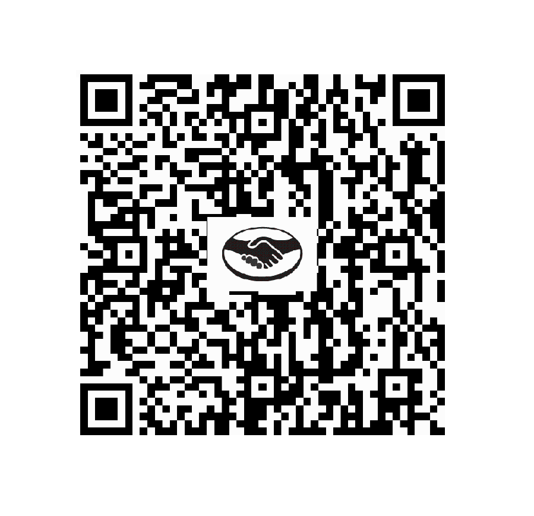

ESCUCHANOS EN VIVO
Radio del Bosque LP
Listo para escuchar
Mirá en Vivo
EN VIVO
Facebook Live

NUESTRA HISTORIA
Donde cada voz encuentra su lugar
Radio del Bosque es una emisora digital independiente de La Plata.
Colaborá con nosotros

Radio del Bosque es un proyecto independiente que crece gracias al apoyo de quienes nos escuchan. Cada aporte, por pequeño que sea, nos ayuda a seguir transmitiendo, mejorar nuestra programación y mantener este espacio de comunicación y música para toda la comunidad.
Escaneá el código QR con Mercado Pago, ingresá el monto que desees y colaborá con la radio.
Tu aporte hace posible que sigamos al aire.
Muchas gracias por ser parte de Radio del Bosque.